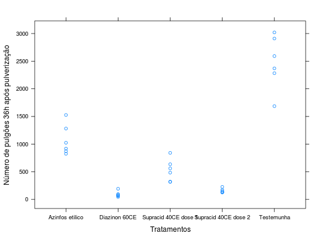

Dados de um experimento visando controle de pulgão (Aphis gossypii Glover) em cultura de pepino, instalado em delineamento inteiramente casualizado com 6 repetições. A resposta observada foi o número de pulgões após a aplicação de produtos indicados para seu controle.
Um data.frame com 30 observações e 3 variáveis, em que
BANZATTO; KRONKA (2013), Quadro 3.2.1, pág. 44.
library(lattice) data(BanzattoQd3.2.1)#> Warning: data set ‘BanzattoQd3.2.1’ not foundaggregate(pulgoes ~ trat, data = BanzattoQd3.2.1, FUN = function(x) { c(mean = mean(x), var = var(x)) })#> trat pulgoes.mean pulgoes.var #> 1 Azinfos etilico 1075.00000 75558.80000 #> 2 Diazinon 60CE 91.33333 2791.86667 #> 3 Supracid 40CE dose 1 527.16667 40126.16667 #> 4 Supracid 40CE dose 2 156.33333 1502.26667 #> 5 Testemunha 2477.00000 233749.60000xyplot(pulgoes ~ trat, data = BanzattoQd3.2.1, xlab = "Tratamentos", ylab = "Número de pulgões 36h após pulverização")